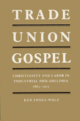

<body bgcolor="#FFFFFF" text="#000000" link="#0000FF" vlink="#CC0000" alink="#CC0000"><center><hr width="350" size="1" align="center" noshade>Traces the interaction of religion and the labor movement in Philadelphia in the late 19th, early 20th centuries<hr width="350" size="1" align="center" noshade><p><a href="https://cdcshoppingcart.uchicago.edu/Cart/ChicagoBook.aspx?ISBN=9780877226529&&PRESS=temple" target="_top">Buy this book!</a> | <a href="https://cdcshoppingcart.uchicago.edu/Cart/Cart.aspx?PRESS=temple" target="_top">View Cart</a> | <a href="https://cdcshoppingcart.uchicago.edu/Cart/Cart.aspx?PRESS=temple" target="_top">Check Out</a></p><p></p></center><!--none//--><h1>Trade Union Gospel</h1>
<H2>Christianity and Labor in Industrial Philadelphia, 1865-1915</H2>
<h3>Ken Fones-Wolf</h3>
<P>cloth 0-87722-652-0 $34.95, Jan 90, <FONT COLOR=#990033>Out of Stock Unavailable</FONT>
<BR> 260 pp
</P><BLOCKQUOTE><I>"Based on an impressive amount of primary research and a solid command of the secondary material as well, Fones-Wolf�s analysis is good, even refreshing. He avoids the reductionism that has dominated some commentaries on religion by historians and social scientists. </I>Trade Union Gospel<I> will contribute to a discussion of religion and labor in a way that is sorely needed and will help reorient us along a path that treats religious sentiment as a serious component of many peoples� lives."</I>
<br>&#151<b>Nick Salvatore</b>, Cornell University<I></I></BLOCKQUOTE>
<p>This study traces the interaction of religion and the labor movement in Philadelphia in the late nineteenth and early twentieth centuries. Exploring the ways that Protestantism mediated between the dominant and working-class versions of American society, Ken Fones-Wolf examines the ambiguity of Christianity as a social force in class conflict. Using Philadelphia as a case study, he shows that aspects of working-class culture and trade union activism were rooted in Protestantism and that religious feeling was a significant factor of working-class life. While religious values complemented a broad spectrum of political and class positions and helped people adjust to social change, Christianity itself was a dynamic force that adapted to emerging ideas of social responsibility and the jarring disjunctions between old beliefs and new realities.
<BR>&nbsp;<H2>About the Author(s)</H2>
<P><b>Ken Fones-Wolf</b> heads the archives and teaches labor history at the University of Massachusetts at Amherst. He was formerly Manuscripts Curator at the Urban Archives Center of Temple University.</P>
<BR><H2>Subject Categories</H2>
<p><A HREF="/tempress/american.html" TARGET="_top">American Studies</a>
<BR><A HREF="/tempress/philly.html" TARGET="_top">Philadelphia Region</a>
<BR><A HREF="/tempress/labor.html" TARGET="_top">Labor Studies and Work</a>
</p>
<BR><h2 class="inpageheading">In the series</H2>
<P><I><a href="http://www.temple.edu/tempress/am_civ.html" onMouseOver="window.status='Click for other books in this series!'; return true;" onMouseOut="window.status=''; return true;" target="_top">American Civilization</a></i>, edited by Allen F. Davis.
</p><p>The focus of <i>American Civilization</i>, edited by Allen F. Davis, is American cultural history. In keeping with the interdisciplinary work in this field, which characteristically brings together art history, literary history and theory, and material culture, the titles in this series cover diverse aspects of American experience&#151from attitudes toward death to twentieth-century design innovations to images of country life in art and letters to trade unions' reliance on religious discourse. The series has been a pioneer in presenting work that uses photographs as historical documents and from its inception has been firmly committed to women's studies. As the first university press series in the field, <i>American Civilization</i> provided the inspiration and the standard for much of the interdisciplinary work developing in the contemporary academy.</p>
<p align="center"><a href="https://cdcshoppingcart.uchicago.edu/Cart/ChicagoBook.aspx?ISBN=9780877226529&&PRESS=temple" target="_top">Buy this book!</a> | <a href="https://cdcshoppingcart.uchicago.edu/Cart/Cart.aspx?PRESS=temple" target="_top">View Cart</a> | <a href="https://cdcshoppingcart.uchicago.edu/Cart/Cart.aspx?PRESS=temple" target="_top">Check Out</a></p><p><font face="Arial" size="1"><a href="copyright.html" onMouseOver="window.status='Web Copyright Policy';return true;" onMouseOut="window.status=''" title="Web Copyright Policy">&copy;</a> 2015 <a href="http://www.temple.edu" target="new" onMouseOver="window.status='Link to Temple University home page';return true;" onMouseOut="window.status=''" title="Link to Temple University home page">Temple University</a>. All Rights Reserved. http://www.temple.edu/tempress/titles/468_reg.html</font></p>